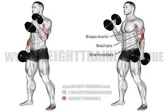

Back Exercises

Back Muscles Anatomy
The back is a large and complex muscle group. The illustration below shows some of the back muscles, which can be easily targeted with exercises reviewed in the next section of this article. As you can see, the fibres of back muscles run at different angles – this justifies the usage of varied grips, handles and machines when training. After all, in pursuit of a monster back you don’t want to leave any muscle fibre unturned.
In depth evaluation of each muscle is beyond the scope of this article - to simplify, the development of latissimus dorsi and teres major is responsible for creating the width of the back (aka the desirable v-taper). Whereas, the underneath running rhomboids and erector spinae give back its thickness. A properly designed training programme should target all of these muscles avoiding any disproportions. Conventionally, the back muscles can also be divided into: ? Upper Back: Rhomboids, trapezius, teres and upper part of the latissimus dorsi, ? Lower Back: Lower latissimus dorsi and lower regions of erector spinae. When strongly developed, erector spinae can be seen “through” the thoracolumbar fascia - connective tissue which cannot be trained itself. The step-by-step exercise guide below will ensure that you get the most out of your training, implementing some tweaks to work on both back width and thickness at the same time!
1) Deadlifts

Deadlifts are one of the “biggest bang for your buck” exercises, engaging tremendous amount of muscles! – Virtually all of the back muscles, abdominals, thighs and buttocks. The movement is considered as the best back thickness builder, providing great erector spinae stimulation. Notably, the deadlift is essentially a safe lifting technique which will accompany you when lifting the barbell off the floor in other exercises, as well as when lifting items of day to day use. Lifting shopping bags with style.
2) Barbell Rows

Barbell row is yet another compound and brutal exercises for back development. It allows using the heaviest weight out of all rowing exercises - this of course is of great benefit when building mass. The movement stimulates trapezius, rhomboids, teres major and latissimus dorsi. Freedom to change the angle between the torso and the floor during the exercise allows to easily throw in some extra cheated reps to boost the intensity.
xercises for back development. It allows using the heaviest weight out of all rowing exercises - this of course is of great benefit when building mass. The movement stimulates trapezius, rhomboids, teres major and latissimus dorsi.3) dumbell Rows

Dumbbell rows help with developing wide and thick back; engaging latissimus dorsi, rhomboids, teres major and trapezius. The exercise can also be considered as core stability movement, as it requires holding the torso rigid, without tilting (spine rotation) or bending (spine flexion) your back. This exercise is a great rows variation, allowing for unilateral work; where each arm works independently of each other. Your arm is the strongest in the neutral grip used in this exercise, allowing to operate with heavy weight while going easy on your shoulders.
Chest Exercises
1)Flat Bench-press

Bench presses can be an effective exercise for building up chest, arm, and shoulder muscles. They work several different muscles in your upper body, including the chest, shoulders, and arms.
2) Incline Bench-press

The incline dumbbell press is the dumbbell variation of the barbell incline bench press and uses an incline or adjustable bench rather than an incline bench rack. The exercise involves pressing dumbbells from the chest by extending the arms up, while sitting at a 30 to 45 incline.
3) Decline Bench-press
The decline bench press is an excellent exercise for strengthening your lower chest muscles. It’s a variation of the flat bench press, a popular chest workout. In a decline bench press, the bench is set to 15 to 30 degrees on a decline. This angle places your upper body on a downward slope, which activates the lower pectoral muscles as you push weights away from your body.
4) Butterfly press
The butterfly press, or fly, is an exercise that strengthens the pectoral (chest) muscles and is typically performed with a weight machine or a cable weight machine at a health club. You might have instances, however, in which you want to perform this movement with free weights instead of a larger machine. Strengthening the chest is important for everyday movements and for improving your overall physical fitness.
Shoulder Exercises
1) Dumbbell Overhead Press
The dumbbell overhead press can be done in either a sitting or standing position and with dumbbells held horizontally at the shoulders or rotated in a hammer grip. You can use this exercise in any upper body strength workout.
2)Dumbell Side lateral

The dumbbell lateral raise is a shoulder exercise used to strengthen the muscles of the shoulder. It's a good exercise for building width in your upper body which gives you the "V" shape.
3)Dumbell trap raises

Biceps Exercises
1) Biceps curl
Sit at a preacher bench, and adjust the bench height so your armpits touch the top of the bench. Grasp an EZ-curl bar overhand at shoulder-width. Curl it up, keeping the backs of your arms against the bench. Take three seconds to lower the bar back down, flexing your triceps as you do it (as if you were performing a cable pushdown).
2) Hammer curl
Perform as you did the conventional dumbbell curl but keep your palms facing your sides throughout (aka neutral grip).
Triceps Exercises
1) Overhead Triceps extension
The overhead triceps extension is one of the most common exercises you'll find in a workout program, and people usually do it from a standing or seated
2) Close grip bench press
Grasp a barbell with an overhand grip that's shoulder-width apart, and hold it above your sternum with arms completely straight
Legs Exercises
1)Front barbell squat
Load a barbell onto the front of your shoulders, hooking your fingers in an underhand grip on either side of your shoulders to support it.
2) Machine Leg press
The leg press is a compound weight training exercise in which the individual pushes a weight or resistance away from them using their legs. The term leg press machine refers to the apparatus used to perform this exercise. The leg press can be used to evaluate an athlete's overall lower body strength.